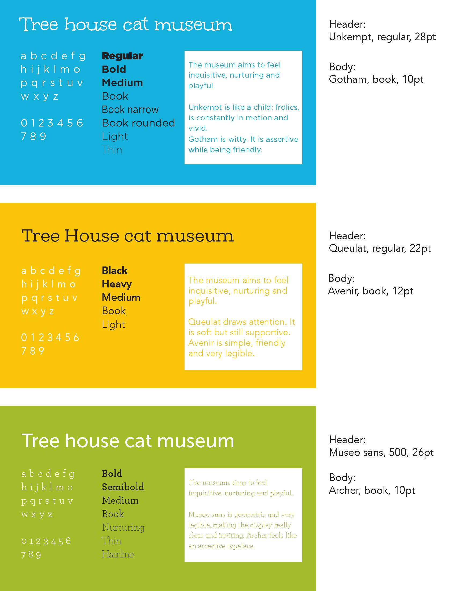
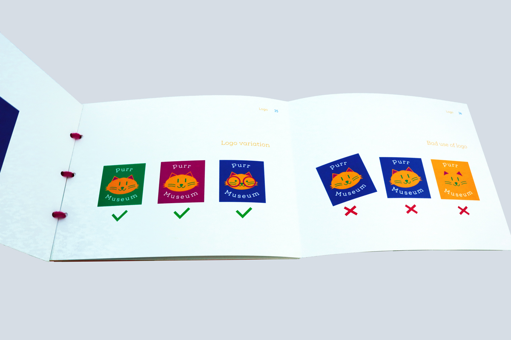
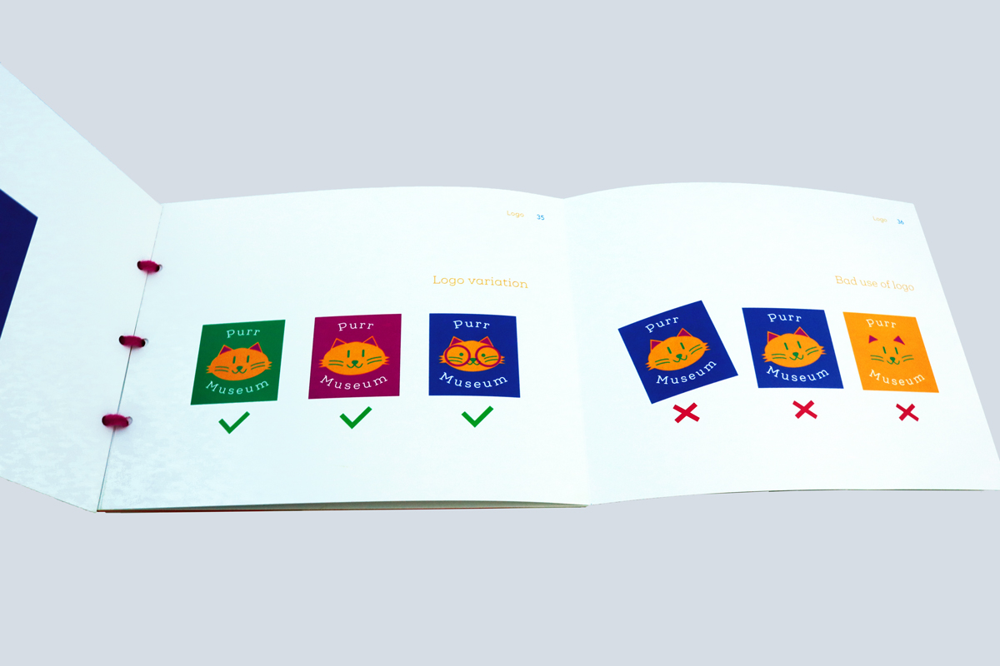

Purr Museum
Rebranding a cat shelter into a museum
Pivoting to a new identity
For the purpose of the assignment, Tree house, a cat shelter, embraces a new strategy to align better with its mission, that is to raise awareness about cats and take care of them. The organization actually pivots to become a cat museum for children.
How might the communication and branding strategy effectively reflect this new transition?
Building the visual identity
Communication strategy audit
I visited the shelter and browsed their website to understand their values and mission, along with the way they communicate. Analyzing their color palette, font, voice, and tone used on different media, the primary and secondary research led to different pain points.
There was some inconsistency across the documentation onsite, online and publications regarding:
- - voice and tone
- - level of abstraction in the use of imagery
Mood board and brand attributes
I went to the Chicago Children's Museum and looked at different reference images to build a mood board in order to get a sense of the future look and feel of the museum.
To fulfill its educative mission, the museum should be a place brim with curiosity and playfulness. It should also trigger a personal connection with cats. As a result, the following brand attributes naturally emerged. One should refer to the museum as an inquisitive, playful, and nurturing place.

Typography
Children are the main audience. Therefore, I explored different types and narrowed down my choice to the most legible and simple ones for the body copy. Header-wise, I selected the ones that match the brand attributes the most.
Ultimately, the Queulat soft and Avenir typefaces were the most relevant.
Logo
I sketched around 100 logos that span the entire spectrum of abstraction: from letterforms, wordmarks, pictural ones to symbols. The pictural ones were the most successful at helping children understand the brand in an easy way. Furthermore, the more expression the cat had the better.
As I tested the external perception of those logos, I kept 2 logos: an official one, and another one that works as a family for children to relate to different cats based on their personality.

Color
Based on the mood board, I extracted the most recurrent color. I tried different color system from a triadic to a double complementary system and applied them to the logo mark. I printed them on paper to have an idea of the final look and feel.


However, as I later applied the color palette on the touchpoints and had more context, I realized that the palette did not work as well as expected. I played with the hues in context and made the final selection based on legibility, contrast and people's perception.

Brand guidelines book
As Tree House recently became Purr Museum, I created a brand guidelines book as a reference to help the marketing and design teams communicate the visual identity and personality of the brand in a consistent, yet unique way.
To reflect the personality of the brand, I designed the interaction accordingly:
- inquisitive: the book includes pages of different sizes that trigger the reader's curiosity to discover and learn more.
- playful: the bsinding is hand-made as children would craft it. I also used yarn to recall the playfulness of the cat and its whiskers.
- nurturing: the cover and back of the book have a cut-out of a playful cat out of velours paper. That texture helps the reader feels like he or she is petting a cat and is interacting with him.
 
